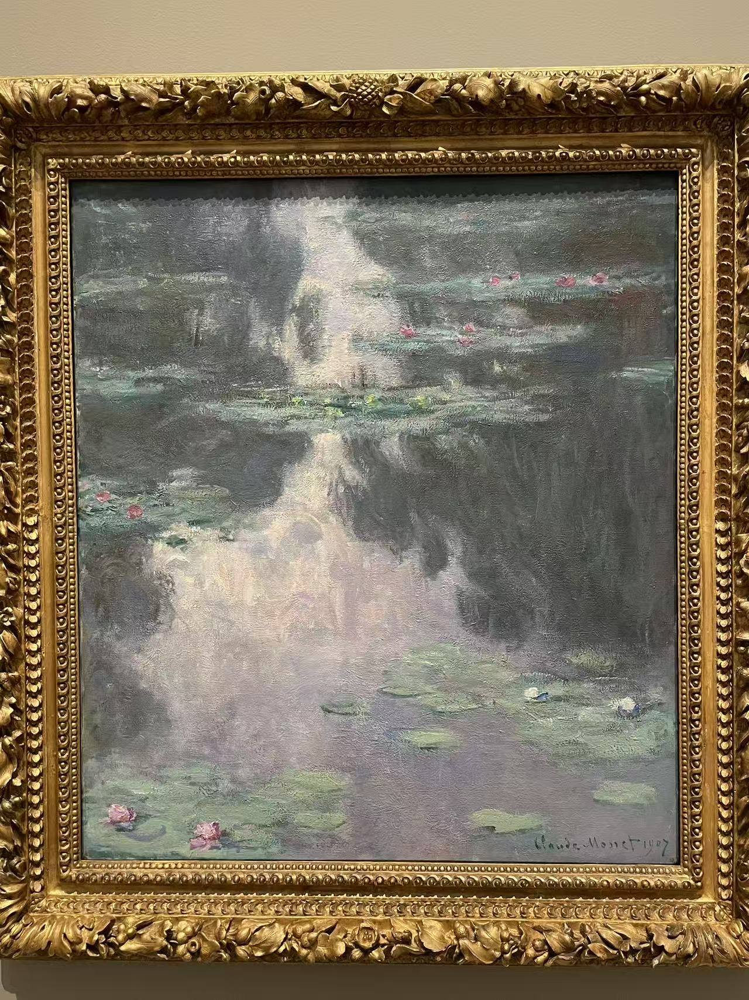
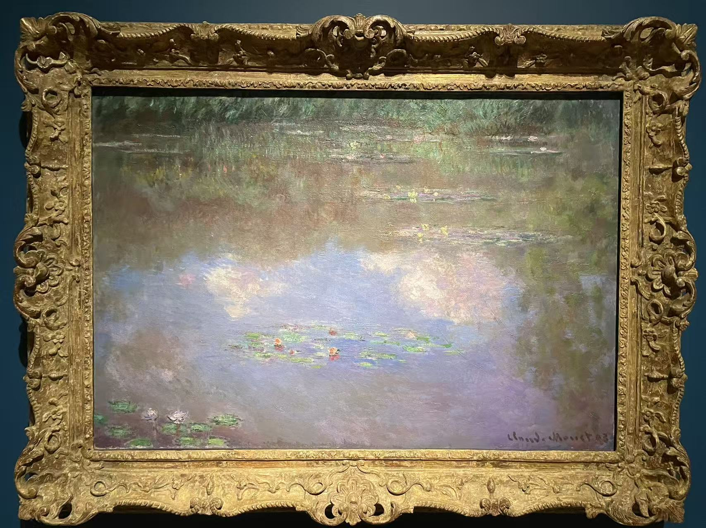

CLAUDE MONET / 水面与倒影
睡莲池（云）
The Water Lily Pond (Clouds)

- 作者
- 克洛德·莫奈
- 年代
- 1903年
- 材料
- 布面油画
- 收藏／所在
- 达拉斯艺术博物馆
- 编号／位置
- 2019.67.13.McD
看画
云影在画面中间留下明亮的空处，睡莲像是漂在天空上，水面与倒影一时难分。
作品札记与资料
与休斯顿的竖幅相比，这张横幅把浅色云影铺得更开。先找那些贴在水面上的叶片，再看它们之间透出的蓝与白，会比较容易分清：画里的天空是倒映在池塘中的。
据达拉斯馆方介绍，这幅画在1917年拍卖时，清晰的云影曾让观看者以为画挂倒了。这件轶事恰好点出《睡莲》的观看难题：当池岸和地平线消失，画面里还能用什么判断上下？收藏署名将它与 Eugene 和 Margaret McDermott 的艺术基金及 Margaret McDermott 的遗赠联系起来。
基本信息据馆方资料与已有现场展签 · 2026年10月核对。